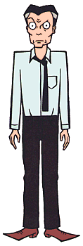

Characters
|
Mr. DeMartino |
|---|
|

Full Name: Anthony DeMartino Current Age: 51 Season One Age: 49 Vocation: History teacher at Lawndale High First Appearance: Esteemsters
Mr. DeMartino teaches History, and is stressed out to the point of
being taken away in a straight-jacket (he makes Jake look like a
master of Zen meditation). Mr. DeMartino is not unlike Jake in the
fact that he suffered a bad childhood at the hands of uncaring
parents. This undoubtedly accounts for most of his current
psychological problems, the rest of which are caused by
intellectual giants such as Kevin and Brittany. He has an annoying
habit of shouting every fifth word or so, which causes one of his
eyes to bulge out of his head, and if all that weren't enough, he's also
saddled with a gambling addiction (which at one time cost him his
car). |
|
Voice:
Mr. DeMartino's voice is performed by Marc Thompson, who also does the voices of Kevin, Upchuck, Jamie, and Mr. O'Neill. |